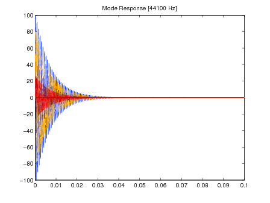
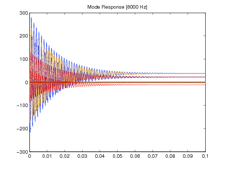
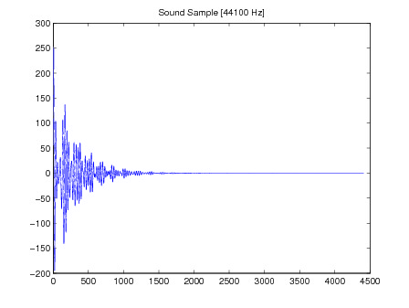
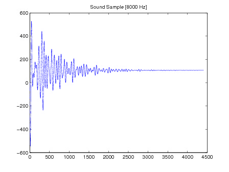

Introduction:
For this project, we plan to physically generate sound for rigid
body collisions. To simulate sound, we followed the implementation
of the paper "Interactive Sound Synthesis for Large Scale
Environments" [3]. First, we reconstructed the objects in the scene
as mass spring systems, and calculated the Gain matrix , and other
coefficients as according to the paper. During run-time, we apply
the force onto our mass-spring system to generate multiple signals
that sum up to a sound wave. column long long column very long
Sound Modeling:
We first looked at our input data. Our input is an XML file with information
on how to generate a few supported primitives. With these primitives, we
generated a mass-spring system based on our guess of how a mesh of the same
primitive would look like. Figure 1 shows a simple example of a cube
primitive. We store the data in an adjacency list.
Simple, example mesh for a cube with particles at each corner.
Given our mass-spring system in the adjacency list, we then have to calculate the elastic force matrix (we'll call it the K-matrix). We assumed that all the springs in the mass spring system have the same k-constant. By Young's Modulus Theorem, this means we can factor the k-constant out when we first calculate the matrix. This K-matrix is a square matrix of size 3n by 3n -- n is the number of particles in the system. For the K-matrix, for each spring (from mass i to mass j), we will do +1 on cells (i,i) and (j,j), and -1 on cells (i,j), and (j,i), this is repeated for 2n and 3n. Figure 2 shows a visualization of our K-matrix for the cube.

Visualization of the full K matrix for the simple cube mesh. The black cells are 0, the gray cells have the value -k and the white cells have the value +2k.
We then setup the equations of motion for the particle system as described in the paper. We assume that the displacement of the particles is small in order to use a linear approximation of the second order system:
Here M represents the diagonal matrix of particle masses, K is the force matrix described above and r is the particles displacement. γ and η are free parameters representing the damping coefficients of the mass-spring system. In order to solve the equation we diagonalize K (utilizing the Eigen C++ library [1]):
and substituting for K in the original equation we get:
Since M and D are diagonal matrices we end up with a set of 3n linearly independent equations in zi, with each zi corresponding to the modes of the sound. The solution for each zi is then just the solution for a damped oscillator:
where λ is the ith eigenvalue of the K-matrix. The constants ci are initialized to zero and updated for a given collision impulse:
The final response for each mode produced by the object is computed using the Euler's equation and the velocity of the modes:
Finally, the sound produced by the object is the summation of each individual mode which is played using the FMOD sound libraries [2]. Figure 3 shows graphs of the signals produced by striking the cube and sampling at different rates.
|  |  |
|  |  |
Plots of synthesized sound for a unit impulse on one of the cube vertices. The top row shows the individual mode responses (left was created at 44.1 kHz and the right at 8 kHz). The bottom row is the final sound sample of the summed mode responses (the left was sampled at 44.1 kHz and the right at 8 kHz).
Results: